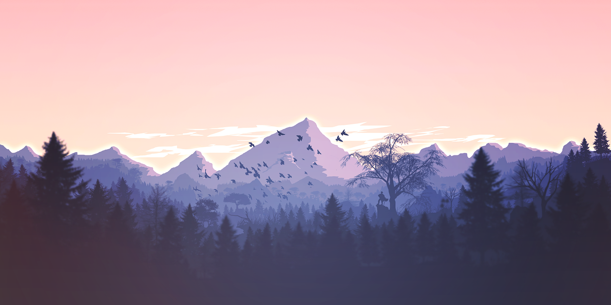

Python入门笔记：从Hello World到小游戏
发布于 2025-10-15
这是我的Python学习笔记！从最基础的打印语句开始，到制作一个简单的猜数字游戏。虽然过程中遇到了很多困难，但当看到自己的代码成功运行时，那种成就感真的很棒！
我会分享一些初学者容易遇到的问题和解决方法，希望能帮助到同样刚开始学Python的同学们。
阅读更多一名高中生的编程学习笔记，分享代码、游戏开发和高中生活

大家好！我是一名普通的高中生，但我有一个不普通的爱好——编程！虽然我刚开始学习编程不久，但我已经深深爱上了代码的魅力。
在这个博客里，我会记录我的编程学习历程、分享一些有趣的小项目、讨论学习心得，也可能偶尔聊聊高中生活。希望能和同样对编程感兴趣的同学们交流学习！
发布于 2025-10-15
这是我的Python学习笔记！从最基础的打印语句开始，到制作一个简单的猜数字游戏。虽然过程中遇到了很多困难，但当看到自己的代码成功运行时，那种成就感真的很棒！
我会分享一些初学者容易遇到的问题和解决方法，希望能帮助到同样刚开始学Python的同学们。
阅读更多发布于 2025-10-01
Scratch真的是一个非常适合编程入门的工具！不需要学习复杂的语法，通过拖拽积木就能实现各种有趣的功能。我用它制作了一个简单的跑酷游戏，虽然很基础，但制作过程中学到了很多编程逻辑。
文章中我会分享游戏的制作思路和一些实用的Scratch技巧。
阅读更多发布于 2025-09-15
上周我参加了人生中第一次编程比赛！虽然只是学校组织的小型比赛，但对我来说意义重大。比赛题目是用Python解决一些基础的算法问题，我和队友一起合作完成了任务。
这篇文章记录了我的比赛准备过程、比赛中的紧张时刻，以及赛后的收获和反思。
阅读更多
大家好！我是一名高中生，今年16岁，来自XX中学。我从高一的时候开始接触编程，虽然学习时间不长，但已经深深爱上了编程带来的乐趣和挑战。
最初我是通过学校的信息课接触到编程的，然后在老师的推荐下开始自学Python。现在我已经能够用Python做一些简单的小项目，也在学习HTML、CSS和JavaScript，尝试做一些基础的网页。
除了编程，我还喜欢数学、物理和机器人，也会弹钢琴和打羽毛球。我的梦想是将来能够成为一名优秀的程序员，开发出有趣又实用的软件。
“我们才刚开始热爱生活，却不得不对这一切开炮。”
这已经是第二次住院了。相比这次，第一次的情况简直太好不过了。
我是个普通的高二学生，现在我将把我经历的一切说出来。说出来就好多了吧，就像把记忆的巨浪抚平似的。
这是一个距离高考似乎很近，又似乎遥遥不可期的日子。那天早上第一节是数学课，老师在讲台上激情地讲演导数。我正无聊地转着手上的自动笔，时不时把冻红的双手伸进口袋。
接着，那使我的生活和学习产生翻天覆地的声音出现了——
手上的运动手环发出蜂鸣声，“嗡”、“嘀嘀”、“嗡嗡”……我放下自动笔，抬起手腕，愕然看到手表上显示着“心率过快——180”。我一下子慌了——因为这些天手臂上莫名出现紫色斑点，心脏也总是不舒服。我看了看课桌过道对面的好友，他正一脸疑惑地盯着我。我二话没说就从从后门溜出，去找班主任请假。
其实，那天的手表心率也有可能是出现了误测。但我很幸运，是它救了我。
我的学校所在地的医院是个小医院。姑姑和妈妈带我在急诊验了血。直到结果出来，我们得知我的血小板只有4x10的九次方/L——情况十分危急，因为正常血小板含量应该在150x10的9次/L～450x10的9次/L——我患上了急重度血小板减少症。
大家手忙脚乱地把我放到急诊室的病床上，给我戴上了各种检测仪器，我的耳边便会想起电视剧里经常出现的声音——“嘀嘀嘀”…
我知道，那个时候妈妈在离病床不远处流眼泪，小姑姑在一旁不断安慰。从小到大看了这么多书，这个时候才真正体会到亲人的痛哭是会刺在自己心底的。
我在病床上等着什么呢？这张在急诊室门口最靠边的床，估计日日夜夜都得看着急诊室的电动门开开合合，说不定也看着无数个灵魂飘飘散散。有些家属还不明白怎么开这扇电动门，我告诉他们“按右边的开关”！现在我觉得，那一瞬间我成了掌握这扇生死门的死神。穿着校服的死神，哈哈。
由于县级小医院没有条件给我输血小板，我将被带到市里的医院。随着担架一晃一晃，我被抬上了救护车。
在救护车里听救护车的鸣笛声和听路上呼啸而过的鸣笛声不同，这次，我成了呼啸而过的鸣笛声的一支震动，飘动在县城上空。这是我一辈子都不会忘记的。
车上有我和妈妈，小姑姑以及一个年轻男医生。姑姑一面和医生聊着血库的事情，开始给她以前在医院的同事打电话，一面在不停安慰妈妈。
当时我根本不清楚自身情况的严重性。我甚至还笑着问妈妈要不要拍张照纪念一下，心里想着人还是要乐观一点。
折腾半天，已经是下午了。市医院的急诊室大很多，同时也人满为患。我的病床被推到了大厅中央的一个空位。
其实我觉得，急诊室是一个比病房更能体现人间真情的地方。在我不久后，抬进来一个老人，被放在在我右边的病床上。他的家人不断想给他戴上氧气面罩，老人却用手拨开面罩。在被强迫戴上后，老人又用力把面罩扯下。无论是不是因为老人已经神志不清，我都宁愿相信老人的举动是来自内心的。
在播客里听过一句很受用的话，“浪漫就是我们不计性价比的行为”。或许老人的行为是属于他的一种浪漫？这或许是我们00后的孩子体会不到的吧！
那天晚上，大家都睡得不好。偶尔会有窗外救护车的鸣笛，又把我带回现实。
躺在病床上很累。这种累不仅仅是因为长时间背部压在床上造成的生理不适，其实还有心理上的。生一次病要拖累家人，耗费他们的时间、精力——且不说金钱——这已经足够让病人于心不忍了。
这种压力犹如火山般压在身上。喷发出的岩浆，凝固后便包裹着自己，喘不过气。偶尔有气泡溢出形成小孔，我才得以急促地大口呼吸。
高中生的学习压力也很大，但顶多像雪山，总会在有一天融化。望着病床上方明晃晃的吸顶灯，我宁愿被雪山压住，等待来年春暖花开冰雪融化，也不愿被厚重的火山岩所包裹。所以说，我宁愿人生困难重重，也不愿身体健康出现问题，因为我知道人生总有雪化成河的一天。
说到底，还是那句话：失去了才知痛苦。智者之所以成为智者，就是因为能够拥有预见性，在失去之前挽回一切。
第二天，血液内科终于有床位了。“481病区！”工友小心翼翼地推着我的病床，远离了急诊室。
被人推着前进的记忆除了生病，还有小时候在超市里坐在购物车的儿童座椅上——但完全是天平两端般不同的感受。一端是通向快乐，另一端是通向禁锢的大门。一端是儿时肥嘟嘟的小手抓起购物车路过的玩具，一端是瘦削的手臂被护士绑上各种仪器，眼前只有一尘不染的天花板
这是个6人房。我躺在靠内的一侧。此时的记忆已经混乱了，只记得某个瞬间一大家人都围在床边，询问我的情况。这一天似乎把所有以前熬夜学习本应该睡的觉都睡回来似的，以往的劳累在这一天之内完全发泄出来。那一晚，我睡得格外的香，身边还有爸爸妈妈的陪伴，我的内心是如此安稳。
突然想起小学看的一些电影里有的一些“恐怖”桥段（现在想起来不过是一些声音嘈杂的画面），那些个晚上我就会从本蒙着头的被子里钻出来，蹿到爸妈的房间，才能克服恐惧，安稳的睡觉。病床上那时的我，也是同样的感觉。
因为担心6人房会有感染风险（那是正值甲流肆行），医生便把我换到了一个唯二的2人间，靠窗的位置。由于我的身体特别虚弱，需要特殊保护，我的床位周围是被整流罩包裹的，可以物理降低感染风险。
接下来就开始正式治疗了。
每天早上6点钟会被抽血的护士叫醒。因为我的整流罩是一半蓝一半透明，透过透明层便可以看见朝阳从窗户外射入。以往只有很少的机会能让我看着朝阳从无到有、天空从深蓝色渐变到金黄色，如今能够天天有机会捕捉这个过程，美哉。
有的时候看着这完美的渐变色，我会想到自己的病情也会像太阳般慢慢升起至好转。但是转念又一想，这又是在应试教育下自己看问题产生的惯性了——总要忍不住分析、解构问题，像考试时做的那样。其实何必呢！只要慢慢能够从心感受，何尝不好？
抽完血，戴上眼罩继续睡觉。爸爸有可能在这个时候收起简易床板，坐在椅子上。
我以前很少见过爸爸起床这么早，他一般都是晚睡晚起。我竟然习惯了这么多年爸爸的作息，直到那时我才意识到爸爸都50多了竟然还这么熬夜，我应该劝劝他。父子之间这种关心的话只可意会不可言传，特别是儿子对父亲。初高中我一直是十一点以后入睡，爸爸也一次又一次强调我该早点睡，我却没有意识到他更应该比我早点休息。
7点钟会有阿姨来打扫，护士们都叫她阿花。阿花在清洁工的世界里似乎很非主流。别人都在为了奖金而拼命加班，她却说“我就是不想干”。我觉得她单纯是讨厌工作，比较懒惰。有病人要换房间，她本应该要再收拾一张新床，却二话不说直接把病人的旧床跟新床调换位置。
这会经常让我思考成年人工作的意义。如果干的工作是自己爱好、理想，他就更大可能在工作中获得杰出的成绩，但不一定喜欢自己的职场环境。反之，有的人干着不喜欢的工作，却能在职场里如鱼得水。这么看来，人活着如果要工作，就得忍，容忍工作环境、容忍工作本身。所以我最向往的是自由职业者，我也相信自由职业者愈来愈多将是大势所趋。
花阿姨打扫完我的房间，便匆匆赶往下一个房间。空气中弥漫着浓郁却刺鼻的消毒液的味道，直捣肠胃。好笑的是，这总让我想起来学校的男生厕所，在学校很大一部分的欢乐和厕所有关的，哈哈哈哈。
8点钟有个胖阿姨回来送早餐，但我都给爸爸吃。可能真的是我们这一代年轻人娇贵惯了，我确实吃不进去每天一模一样的白粥、咸菜、花生、水煮蛋。我很难想象上一代甚至上上一代是怎么在困难时期日日吃着最普通的粮食的。
9点钟医生查房。两个主任医师后浩浩荡荡跟着一群看着也就比我大五、六岁的年轻医生，应该是医科大学附属医院的医学生。他们跟爸爸交代几句便转身离开，留下爸爸的感叹。
接下来就是漫长的打针的一天。
每天的流程基本一致。太阳仍照常升起。世界也没有发生太大的变化。我却一天一天在变好。
两个姑姑在医院附近租了个小套间，每天在附近的菜场买菜、回小房间烧菜，再带到医院给我。爸爸就负责在医院陪我。我偶尔背背单词。看看电影。和远在美国的姐姐聊聊天。阅读一些优质公众号。吃饭、睡觉。打游戏。
一个月。两个月。床成了我的世界。
这个世界是这么小，小到只能在上面浅浅翻个身。但这小世界的周围，数个大世界共同维护着小世界的安全，生离死别不再存在。知道两个月后，我才清楚地明白自己原来已经是一只脚踏过鬼门关的人了，这让我重新思考死亡。
万亿分之一的机会，我出生了；同样万亿分之一的可能，我又会死掉。瞧瞧，世界是公平的。它对待所谓善人恶人是平等的。大家都惧怕生离和死别，同为人类。“死只不过是生的另一面”，生和死的概率是一样的。我就是这么理解向死而生呢。所以，不要惧怕死，也不能惧怕生。
科学上理解生和死，浪漫一点说，也只不过是数不清的细胞灿烂如超新星般破碎，以及，数不清的细胞如星团般重组、升起。看吧，人类存在的意义本质上和宇宙存在的意义完美重合了。或许这就是造物主的浪漫吧！
想起小学一二年级时，自己是非常惧怕家人死亡的，但从来没考虑过自己也会死亡。长大一点后，就不再去想死亡这件事情了。直到现在。